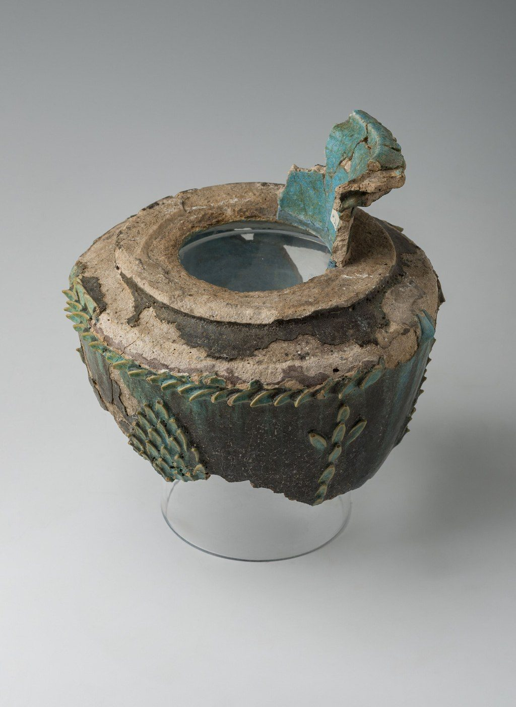
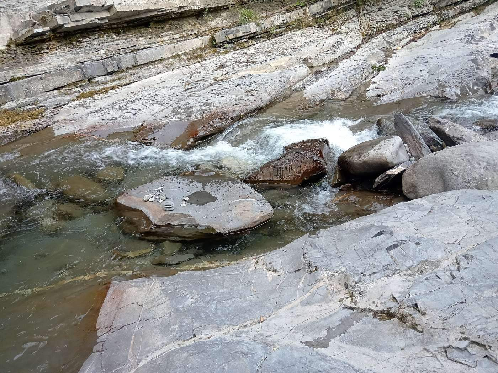
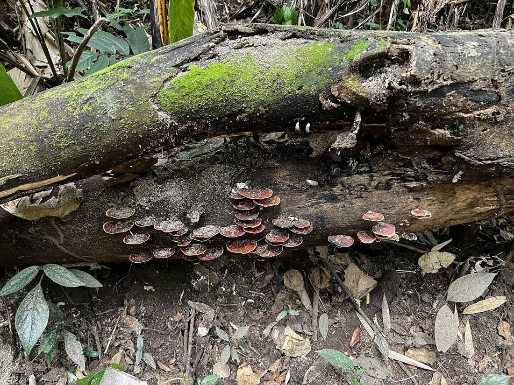
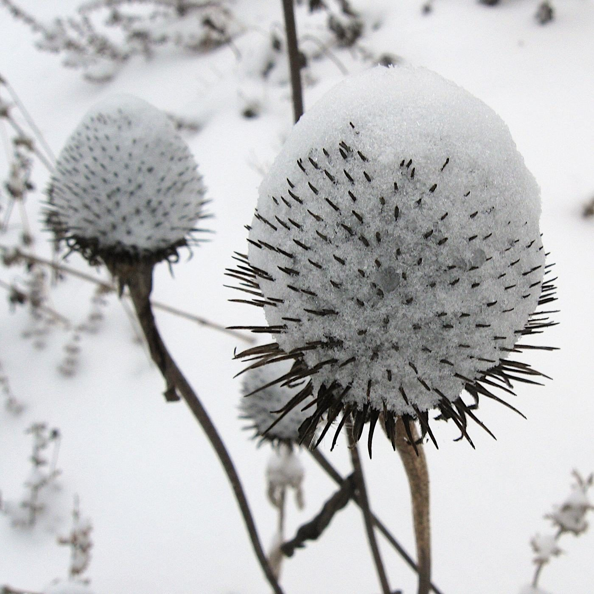
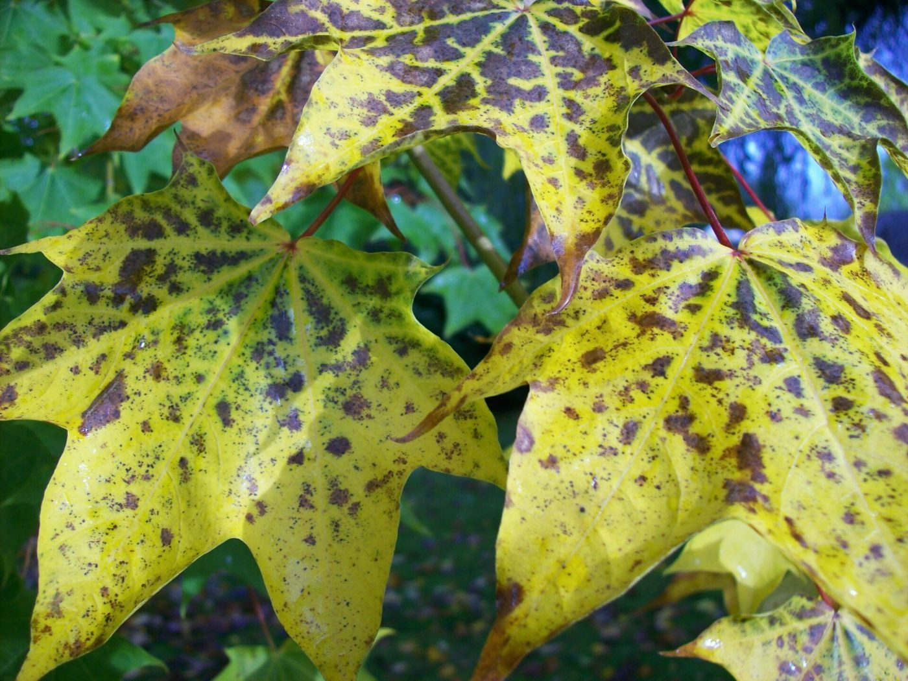

店のこと
ピアスの部位の配置図
お店の詳しい情報は準備中です。ここでは、制作側が考えたデザインの考え方を紹介します。


制作側の連想
番号は、部位の番号
ホームの図にある1〜6の番号は、それぞれピアスの部位の名前に対応します。ピアスの部位を図にしたもので、制作側の連想です。お店の理念・由来とは無関係で、実在の製品や宝飾品の仕様を示すものではなく、選び方や使い方の案内でもありません。
1石(ストーン)
先端につける飾りの石。光を受けて小さくきらめく、図の中でいちばん目立つ部分。
2爪(つめ)
石のまわりを囲んで、石を台に留めるための細い突起。数本で支える形が多い。
3台座(皿)
石を載せる平らな土台。裏側の中心に、ポストの根もとがつながっている。
4ポスト
台座の裏からまっすぐ伸びる、細い軸。留め具が通っていく道すじになる。
5溝(みぞ)
ポストの先に近い、輪のようにくびれた部分。留め具がここで止まる。
6キャッチ
ポストの先に通して留める小さな留め具。蝶の羽のような形のものもある。
写真(イメージ)
写真(イメージ)




写真はイメージです。お店のものではありません。